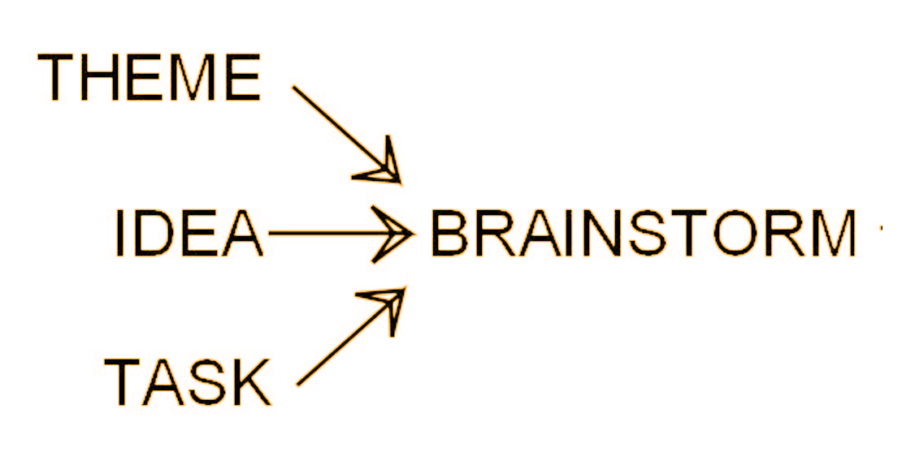
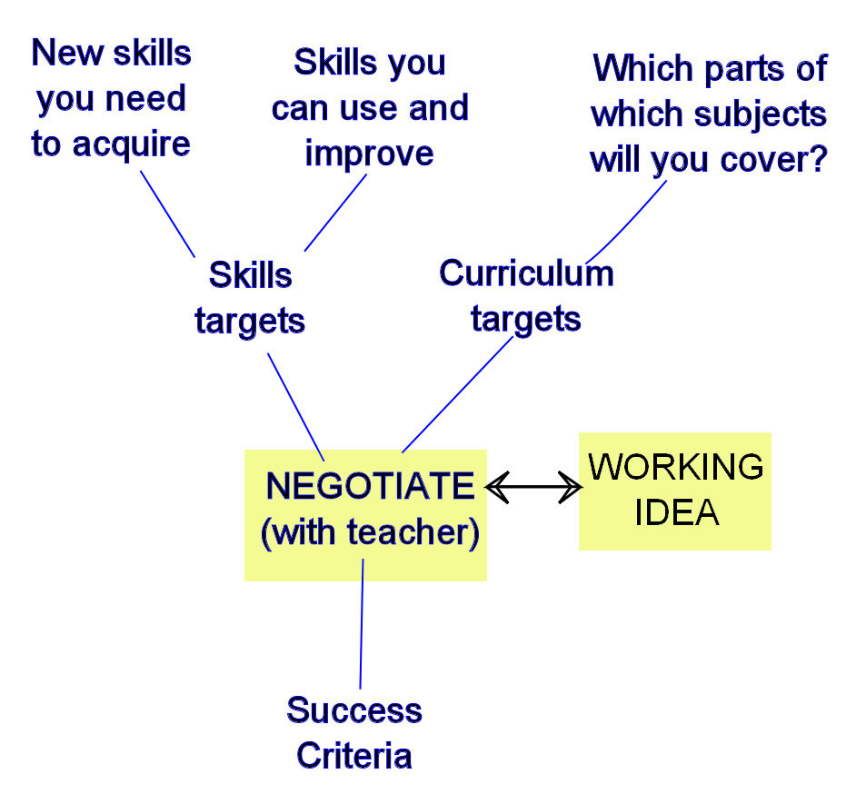
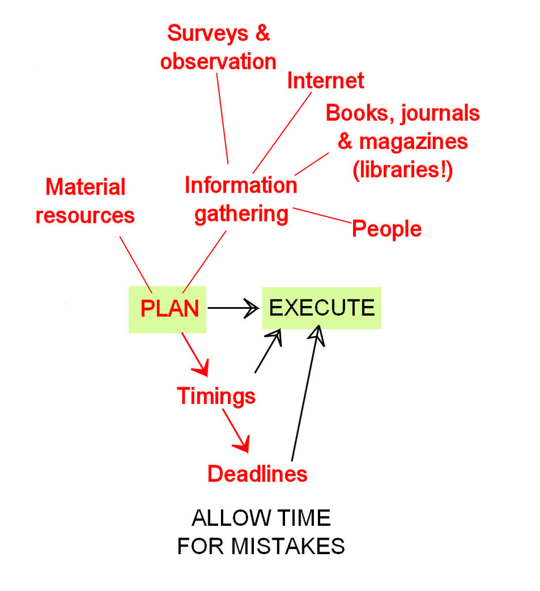
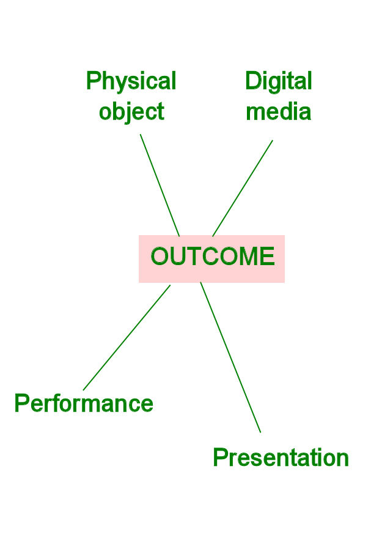
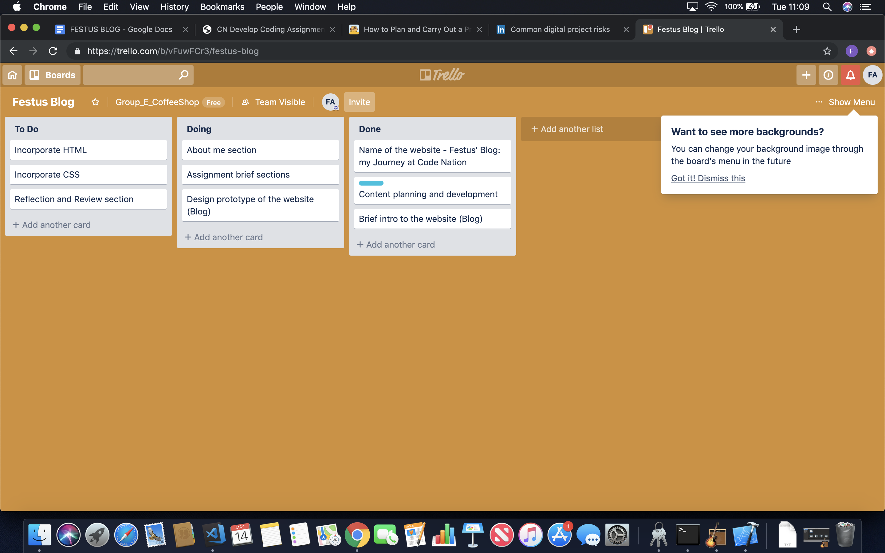

FESTUS’ BLOG
This blog is about my journey at Code Nation and it details my profile and work at Code Nation
About me
Hi! Am Festus, am a student at Code Nation. Prior to my joining code nation, I worked in the social care industry and also own a small firm that helps in recruiting and training staff for the industry.
I join Code few months ago and my time here as being amazing! The staff and instructors are friendly; always willing to answer your question and assist you when you are struggling or just need some extra push. What I found more attractive about Code Nation is, it’s like a world of two extremes. It that gives a feeling of both a school and a workplace. Informal in every sense of the word but yet very organised.
Apart from learning programming at Code Nation, am a social activist and critic and my campaign mainly focus on good governance; child education; and protection of the environment (In the Niger Delta) in my country of origin Nigeria through social media platform with about two hundred thousand followers on my social media handles.
My hobbies are reading; writing; photographing & videographing; watching movies; and traveling. My career and professional interest are: Entrepreneurship; Politics; Law; Cyber security and Programing. I have Bachelor degree in History; Post graduate degree in law; Master of Science in Service Management.
Assignment
The purpose of IT in modern business
As someone from Entrepreneurship background, my time at Code Nation has impressed on me more than ever before the relevance of IT in modern business. IT offers limitless possible for businesses. It helps to drive innovation and a veritable tool to solving complex problems. It help to improve communication and fosters better decision making. With the help of IT businesses can expansion into new territories or countries seamlessly and with ease, without requiring their physical presence. With the aid of IT businesses can scale their operations, which lead to more efficiency, cost reduction and increase productivity.
Methods, skills and resources needed to complete digital projects successfully
At Code Nation the teaching methodology is largely project based with focus on teamwork, collaboration and project management. Our last project was centred around developing a mobile app for a coffee shop and we worked in a team of four. We adopted five stages methodology:
- Idea conception
- Negotiation
- Plan & Execute
- Outcome
- Judgement
Stage one : Idea conception
One of such projects was to do develop a mobile app for coffee shop. The first stage was to brainstorm and bounce some ideas around - for example, what we want our coffee shop to be and what sort of app we want to develop, what sort of features we want to include on our app, what should be in our menu and who are our target audience ect. We brainstormed on wide range of ideas, wrote them all down, no matter how odd, and then we filtered our ideas and narrowed down on the favourites. Whenever am working on individual project, I find a couple of friends or family members to brainstorm with, or maybe even my instructor!
Stage two: Negotiation
Once we have gotten our ideas, we need to make sure they are acceptable to our intended audience (which could be project supervisor, client or in our case our instructor). Next, we need to make sure we know what relevant skills we already have and what skills we need to acquire. Also we need to know in advance how our success (or failure) will be measured. It may be a checklist of facts covered, a score from some judges ect.
Stage three: Plan & Execute
At the plan and execute stage, we need to know what material resources do we need to gather together or gain access to? What information do we need to accumulate? We also need to work out when We need these things. Finally, we need to have a good idea of our final deadline.
Stage four: Outcome
Then the presentation of the project here.
Stage Five: Judgement
Once we have presented our final piece of work, it will be judged against the criteria we agreed to way back in stage two. Hopefully, we will have succeeded, maybe we will failed miserably, more probably we will end up somewhere in between. Whatever the result, we have be constructive about it. Pay attention to where we went wrong, and figure out how to make it right next time. Highlight what went right, and remember to do the same next time. Whatever the result of the project, there will always be more in future, and if we learn your lessons now, future projects will only be better.
Plan and carry out tasks using IT
I used the five stage methodology explained earlier (Idea conception; Negotiation; Plan & Execute; Outcome; and Judgement). First was to decide on what type of website I want to design, have a name for the website, develop the content; design a prototype, incorporate HTML and CSS and the last was the reflect on the project, write a review and appraise the project.

See link to Trello Board
The risks that might impact digital projects
Some of the risk we identify in the cause of our project are: Time constraint; knowledge gap or inadequate technical know-how; Project scope ill defined or lacking sufficient clarity; Team members with negative attitudes towards the project; Low team motivation; Disagreement between team members over project issues; Inputs from stakeholders that are low quality; Design not feasible, lacks flexibility or not just fit for purpose; Technology components not fit for purpose; and Technical problems with the project management tools themselves.
Selecting and using IT systems and software
Selecting the right kind of technology for an IT project depends on the business need of your client or the need the project seeks to satisfy. Other factors to consider are quality; scope; budget and deadline.
How my chosen technologies have helped me achieve my outcomes
Trello is a task management app that gives a visual overview of what is being worked on and who is working on it. It uses the Kanban system. Trello is a system of boards, lists and cards. This creates a system that allows for individuals or teams to track a project and collaborate or contribute where they can be most useful or where it is most needed. I use trello to manage my website project, organise and prioritise my work.
Git helps us manage our project files. It helps to keep track of the entire history of things that you are working on. This is especially helpful for software developers because when you are working on a project you first build a basic version of it and then try to improve it by adding new features (or) just experiment with things. it automatically tracks every minute change in your project and allows us to revert back to a previous version no matter how many times you changed your files. it allows people to work together on the same project at the same time without disturbing each other’s files. Collaboration is all the more easier with Git. Team members can work on different features and easily merge changes.
GitHub is a web-based service for version control using Git. Basically, it is a social networking site for developers. You can look at other people’s code, identify issues with their code and even propose changes. This also helps you in improving your code. On a lighter note, it is a great place to show off your projects and get noticed by potential recruiters.
Legal guidelines and constraints that impact digital projects
One major concern is the General Data Protection Regulation (known as GDPR). The regulation has a number of aims all designed to increase and standardise the protection of personal data. The implications for not complying can be serious with the possibility of fines of 4% of turnover or $20 million. Software designers and developers will have to know at least the basic GDPR rules to be able to create apps that can address the clients’ needs. They will need to know about the rule of “data protection by design and by default,” referring to the implementation of appropriate technical and organizational measures for ensuring that, by default, only personal data which is necessary for each specific purpose of the processing is processed. This applies to the amount of data collected, the extent of its processing, the period of its retention as well as its accessibility.
read more on how legal guidelines and constraints that impact digital projects.
The content and layout for each page
To make the content interesting and captivating as much as possible, I decided to tell a story detailing my experience at the Code Nation. The content consist of brief introduction to the blog; The About Me section; My experience at Code Nation (this focus mainly on the assignment brief) and lastly the Review section.
Copyright and other constraints affecting websites
I did not have any copyright issues as the project is not of commercial venture but academic exercise and resources consulted and used were referenced.
Issues that people with disabilities may face when using web-pages and how we can overcome them
Deafness
Deafness involves a substantial uncorrectable impairment of hearing in both ears. Some deaf individuals' first language is a sign language, and they may or may not be fluent readers of a written language.
Barriers that people who are deaf may encounter on the Web include:
- lack of captions or transcripts for audio content on the Web
- lack of visual signposts in pages full of text, which can slow comprehension
- for non-native readers of a written language
To use the Web, people who are deaf may rely on captions for audio content.
Color Blindness
Common forms of color blindness include difficulty distinguishing between red and green, or between yellow and blue. Sometimes color blindness results in the inability to perceive any color.
Barriers that people with color blindness may encounter on the Web include:
- color that is used as a unique marker to emphasize text on a Web site
- text that inadequately contrasts with background color or patterns
- browsers that do not support user override of author's' style sheets
To use the Web, people with color blindness may use their own style sheets to override the font and background color choices of the author.
read more on issues that people with disabilities may face when using web-pages and how we can overcome them.
Which are the appropriate file types for websites
GIF format is limited to 256 colors and is a lossless compression file format, a common choice for use on the Web. GIF is a good choice for storing line drawings, text, and iconic graphics at a small file size. PNG format is a lossless compression file format, which makes it a common choice for use on the Web. PNG is a good choice for storing line drawings, text, and iconic graphics at a small file size. JPG format is a lossy compressed file format. This makes it useful for storing photographs at a smaller size than a BMP. JPG is a common choice for use on the Web because it is compressed. For storing line drawings, text, and iconic graphics at a smaller file size, GIF or PNG are better choices because they are lossless.
REVIEW
Review the ongoing use of IT tools
Some the IT tools used were Github; studio code; Slack; Codepen; and Trello. The IT tools were efficient, user friendly and appropriate for the required task.
Assess the strengths and weaknesses of your final project
One of the major constraint faced during the project was lack of sufficient time - we had just about three days to undertake the project. Doing coding for the first time, there is apparent lack of experience; lack of technical know-how and no sufficient time to master the IT technology we were required to use for the project. Allover, am not satisfied with the project. Going forward, I would explore the area; improve my mastery of the the technologies and hopefully come up with a better outcome.
Describe further improvements you can make to your project
To master the use of the IT technology; and to improve my knowledge, understanding and use of HTML and CSS.
Review the benefits and drawbacks of IT tools and systems used in terms of productivity and efficiency
The major drawback insufficient time; and lack of technical know-how and insufficient knowledge on the technology we were required to use and poor knowledge of HTML and CSS. The aforementioned factor compromise the final outcome of the project. Mastery of the IT technology and improve knowledge of the HTML and CSS will definitely result to a better outcome.
Describe ways to improve productivity and efficiency
Mater the use of of the various technology such as Github; studio code; Codepen and Trello and improve your knowledge, understanding and use of HTML and CSS.
Describe how you would go about testing digital solutions
The purpose of the test are: Improved user experience; Reduced business risk/improved accuracy and consistency; Increased coverage (across geographies, browsers, devices, etc.); Cost reduction (through automation, open source technologies, etc.); Rapid delivery of change; Partnerships with the latest technologies and tools; Real devices and device management solutions. To achieve the following, it will be imperative to test for: Localisation; Automation; Managed Crowd Testing; Functional Testing; Security and Penetration Testing; Performance and Load Testing; Accessibility & Usability Testing; Digital/Agile Test Strategy consultancy, design and implementation; Mobile Device Test Tools, Emulators & Real Device Test Labs; and API/Integration Testing.
Reference:
https://www.w3.org/WAI/EO/Drafts/WAI-access-profiles
https://preyproject.com/blog/en/the-impact-of-gdpr-on-it-management/
https://codeburst.io/git-and-github-in-a-nutshell-b0a3cc06458f
https://www.w3schools.com/
https://www.slideshare.net/dickyadams/common-digital-project-risks